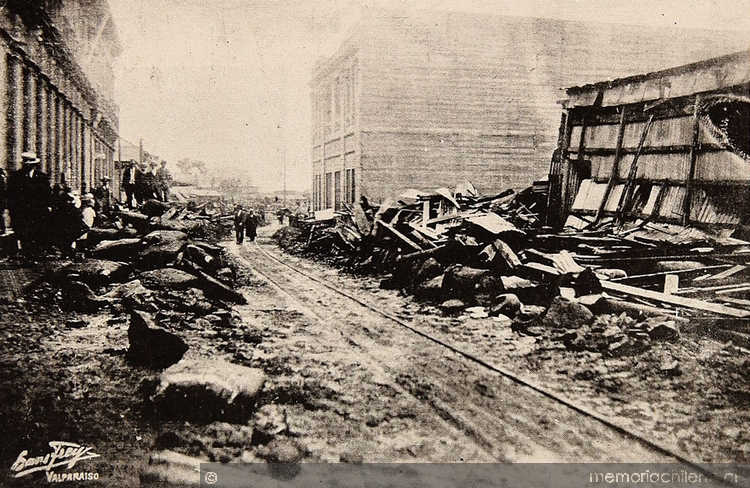
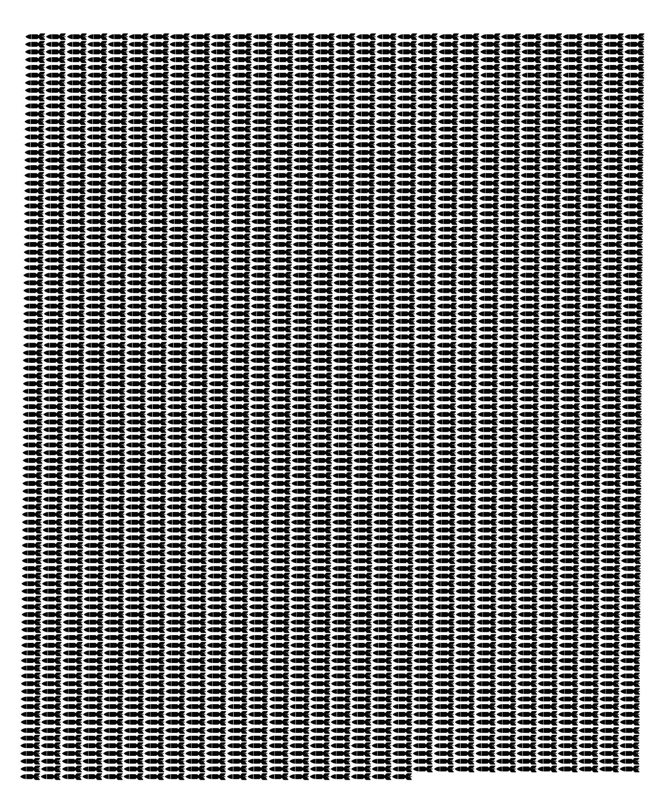

Inicio
Terremoto de 1922

Durante 1922, Vallenar fue afectado por un terremoto y posterior Tsunami moderado. Se presentan datos de la catástrofe en la siguiente tabla.
Lugar
Fecha
Magnitud
Muertos
Damnificados
Total Energía Liberada (Megatonelada)
Vallenar
14-11-2007
7,5 Richter - 8 Mercalli
1520
2000
58
¿A qué equivale esa energía liberada? Equivale a 2899 bombas de Hiroshima. O sea...
